目录
- A. 元信息与事实源
- B. 产品形态 × 角色矩阵
- GT-12682-RBL优化
- GT-12660 邮件安全总览：执行动作模块进行统一
- GT-12659 邮件处置中心：执行动作统一修正
- GT-12665 发信人黑白名单-域名类型仅可选择组织内域名，建议支持填写发信域名
- GT-12661 身份认证与仿冒检测-去掉多出原型未定义且点击无效的例外规则按钮
- GT-12657 附件安全检测-模块总开关需额外保存才生效，与其他模块即时生效行为不一致
- GT-12587 邮件安全总览-攻击时段分布切换周内后只显示7列导致时间图不完整
- GT-12563 搜索模板实现
- C. 差异标注（D-001 ~ D-010）
- D. 待确认事项（Q-001 ~ Q-002）
- E. 版本历史
A. 元信息与事实源
| 字段 | 内容 |
|---|---|
| 文档编号 | GT-126811 |
| 需求名称 | GT-12682-RBL优化 |
| 规格类型 | 增量规格（Incremental）· 多变更点格式 |
| 当前版本 | v2 |
| 生成日期 | 2026-07-31 |
| 路由路径 | /zh/rules/rbl |
| 组件路径 | src/components/security/RBLFilterPage.tsx、src/components/security/rbl-config-serde.ts、src/types/rbl-filter.ts |
| webapp commit | ebec245 |
| 对照 spec commit | not-used |
| 历史对话记录 | 当前上下文已提供（完整需求讨论、设计方案确认、代码变更记录） |
| 事实源优先级 | 1. 用户当前描述；2. 运行中 webapp 浏览器真实截图；3. webapp 源码 |
| 浏览器验证状态 | 2026-07-31 演示环境真实截图（暗色题 / 1305×832 / AI版·多租户 / 平台管理员） |
| 变更类型 | 功能变更（架构调整 + 交互优化 + 选项集合调整） |
B. 产品形态 × 角色差异矩阵
| 功能 / 元素 | 变更 | AI-单 平台管理员 |
传统-单 平台管理员 |
云-多 平台管理员 |
云-多 租户理员 |
AI-多 平台管理员 |
AI-多 租户管理员 |
传统-多 平台管理员 |
传统-多 租户管理员 |
|---|---|---|---|---|---|---|---|---|---|
| 处置策略 · 执行动作卡片（RadioGroup 左卡） | #2 | ✅ | ✅ | ✅ | ? | ✅ | ? | ✅ | ? |
| 处置策略 · 灰名单策略卡片（RadioGroup 右卡） | #1 #2 | ✅ | ✅ | ✅ | ? | ✅ | ? | ✅ | ? |
| 执行动作下拉 · 拒收选项 | #3 | ✅ | ✅ | ✅ | ? | ✅ | ? | ✅ | ? |
| 执行动作下拉 · 审核选项（新增） | #3 | ✅ | ✅ | ✅ | ? | ✅ | ? | ✅ | ? |
| 执行动作下拉 · 丢弃选项（新增） | #3 | ✅ | ✅ | ✅ | ? | ✅ | ? | ✅ | ? |
| #3 | ❌ | ❌ | ❌ | ❌ | ❌ | ❌ | ❌ | ❌ | |
| #3 | ❌ | ❌ | ❌ | ❌ | ❌ | ❌ | ❌ | ❌ |
? 标记项：租户管理员角色是否可见 RBL 过滤配置页面，当前版本未在租户管理员账号下验证，列入待确认 Q-001。
灰名单从执行动作中分离
1.1 方案概述与架构说明
原设计中 greylist 是 product_action 的一个枚举值，与 block / quarantine / mark 并列在同一个 Select 下拉中。用户反馈：灰名单是"临时挂起等待重试"的处置策略，而其他选项是"即时处置动作"，两者语义层不同，不应混放。
RblConfig 中新增独立的 greylistEnabled: boolean 字段，与 action: RblImmediateAction 并列。RblImmediateAction 类型不再包含 'greylist'。保存时 diffRblConfig 根据 greylistEnabled 决定写入 API 的 product_action 值（greylistEnabled=true 时写 'greylist'），保持后端接口兼容。
1.2 截图式交互预览
S-1 · 页面默认态（执行动作卡片选中，展示 Select 下拉）
触发路径：导航至 /zh/rules/rbl → 页面加载完成后的默认呈现态 · 暗色主题 / 1305×832 / AI版·多租户 / 平台管理员
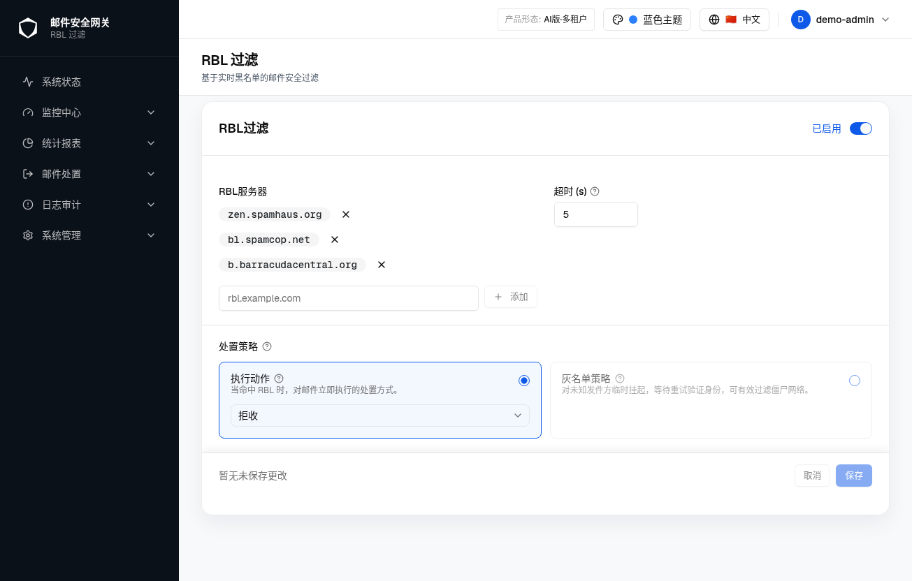
1.3 数据模型变更
| 字段 | 变更前 | 变更后 | 说明 |
|---|---|---|---|
RBLFilterProductAction |
'block' | 'quarantine' | 'mark' | 'greylist' |
'reject' | 'quarantine' | 'review' | 'discard' | 'greylist' |
API 层类型，greylist 保留（兼容后端），即时动作枚举调整见变更 #3 |
RblImmediateAction |
（不存在） | 'reject' | 'quarantine' | 'review' | 'discard' |
新增前端独立类型，不含 greylist |
RblConfig.action |
RBLFilterProductAction（含 greylist） |
RblImmediateAction（不含 greylist） |
即时动作字段，灰名单由独立字段控制 |
RblConfig.greylistEnabled |
（不存在） | boolean |
新增字段，独立控制灰名单策略开关 |
| 旧数据兼容 | — | 后端 action='greylist' → 前端映射为 action='reject' + greylistEnabled=true |
parseRblConfig 中处理 |
| 旧数据兼容 | — | 后端 action='block' 或 'mark' → 映射为 action='reject' |
legacyMap 处理 |
处置策略互斥卡片选择器
2.1 方案概述
原双列并排布局（grid grid-cols-2 divide-x）视觉上暗示两列可同时启用，但 API 层两者互斥。用户指出此设计会造成歧义。
RadioGroup 包裹两张并排可选卡片。左卡"执行动作"、右卡"灰名单策略"，两者互斥（RadioGroup 保证单选）。选中卡片高亮（border-primary bg-primary/5），未选中卡片 dimmed（opacity-60），直观表达互斥关系。选中卡片内部展开对应的子配置（执行动作 Select / 灰名单摘要+配置按钮）。
2.2 截图式交互预览
S-2 · 执行动作卡片选中态
触发路径：页面加载默认态（greylistEnabled=false）· 暗色主题 / 1305×832 / AI版·多租户 / 台管理员
S-3 · 灰名单策略卡片选中态
触发路径：点击右卡"灰名单策略"卡片或其 RadioItem → 选中状态切换 · 暗色主题 / 1305×832
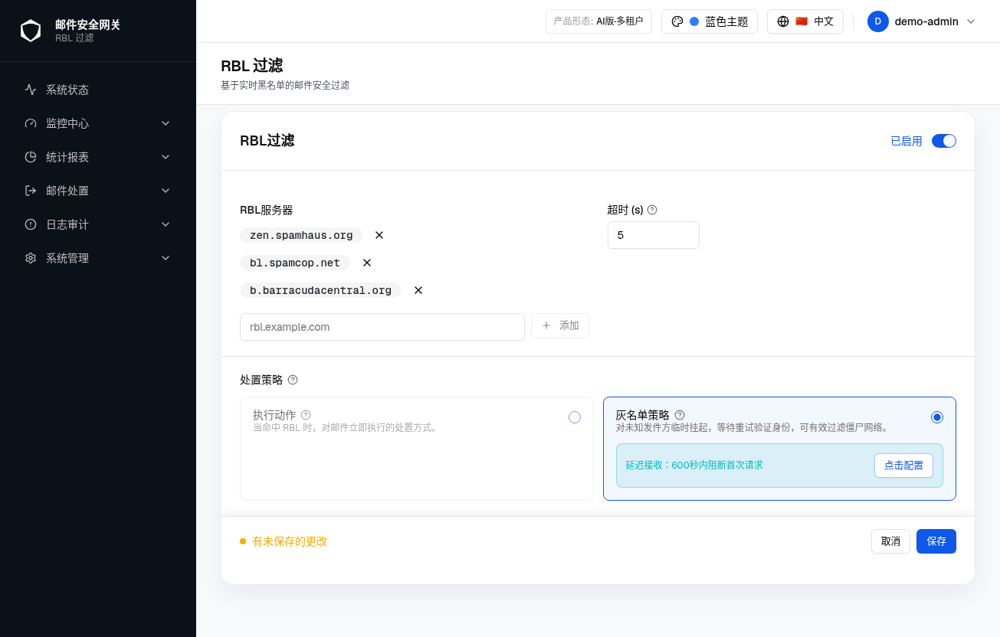
2.3 逐元素说明
| 元素 | 类型 | 文案 / 默认值 | 交互行为 | i18n key | 形态/角色差异 |
|---|---|---|---|---|---|
| 处置策略 · 区域标题 | Label + Tooltip 图标 | "处置策略" | Hover Tooltip 提示互斥说明 | rblFilter.disposalStrategyTitle |
[Base] |
| 处置策略 · RadioGroup 容器 | RadioGroup (grid grid-cols-2 gap-3) |
— | 保证两张卡片互斥单选 | — | [Base] |
| 左卡 · 执行动作 | label[for] 卡片，RadioGroupItem value="action" | 选中：border-primary bg-primary/5；未选中：opacity-60 |
点击整张卡片切换为执行动作模式 | rblFilter.actionSectionTitle |
[Base] |
| 左卡 · 执行动作 Select | Select 下拉（仅在左卡选中时渲染） | 默认值：拒收（reject） | 展开后选择 reject/quarantine/review/discard；onChange 触发 markDirty | 见变更 #3 | [Base] |
| 右卡 · 灰名单策略 | label[for] 卡片，RadioGroupItem value="greylist" | 选中：border-primary bg-primary/5；未选中：opacity-60 |
点击整张卡片切换为灰名单模式，greylistEnabled=true |
rblFilter.greylistSectionTitle |
[Base] |
| 右卡 · 灰名单摘要行 | 摘要文本 + 按钮（仅在右卡选中时渲染） | "延迟接收：600秒内阻断首次请求"（来自 greylistSummary） | 点击"点击配置"按钮打开灰名单配置 Dialog | rblFilter.greylistConfigure |
[Base] |
执行动作集合调整
3.1 截图式交互预览
S-4 · 执行动作下拉展开态（四个动作全部可见）
触发路径：执行动作卡片选中 → 点击 Select 触发器展开下拉 · 暗色主题 / 1305×832 / AI版·多租户 / 平台管理员
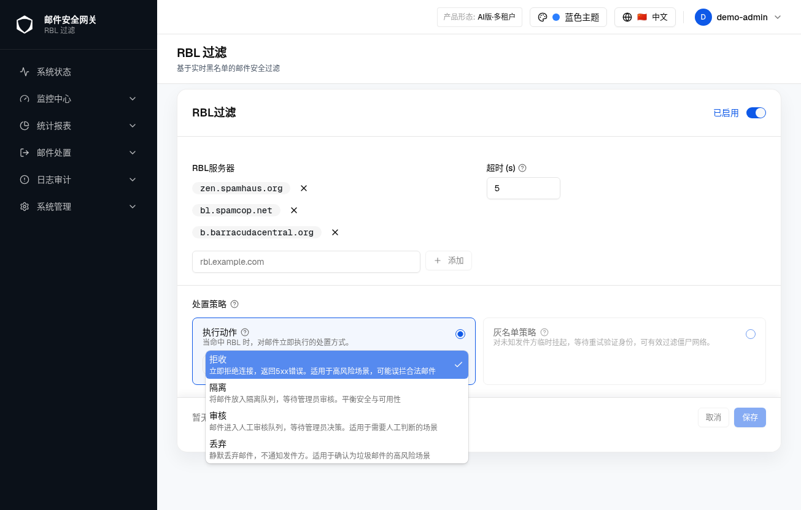
3.2 逐元素说明
| 选项 | API value | 中文文案 | 说明文字（Select 内展示） | 变更标记 |
|---|---|---|---|---|
block |
已移除 旧数据兼容映射至 reject | |||
| 拒收 | reject |
拒收 | 立即拒绝连接，返回5xx错误。适用于高风险场景，可能误拦合法邮件 | 改名 原 block → reject |
| 隔离 | quarantine |
隔离 | 将邮件放入隔离队列，等待管理员审核。平衡安全与可用性 | 无变更 |
mark |
已移除 旧数据兼容映射至 reject | |||
| 审核 | review |
审核 | 邮件进入人工审核队列，等待管理员决策。适用于要人工判断的场景 | 新增 |
| 丢弃 | discard |
丢弃 | 静默丢弃邮件，不通知发件方。适用于确认为垃圾邮件的高风险场景 | 新增 |
3.3 国际化 key 变更（4 语言同步）
| i18n key | 变更类型 | zh 值 | en 值 |
|---|---|---|---|
rblFilter.actionBlock | 已移除 | ||
rblFilter.actionBlockTip | 已移除 | ||
rblFilter.actionMark | 已移除 | ||
rblFilter.actionMarkTip | 已移除 | ||
rblFilter.actionReject | 新增 | 拒收 | Reject |
rblFilter.actionRejectTip | 新增 | 立即拒绝连接，返回5xx错误… | Reject the connection immediately… |
rblFilter.actionReview | 新增 | 审核 | Review |
rblFilter.actionReviewTip | 新增 | 邮件进入人工审核队列… | Route the mail to the manual review queue… |
rblFilter.actionDiscard | 新增 | 丢弃 | Discard |
rblFilter.actionDiscardTip | 新增 | 静默丢弃邮件，不通知发件方… | Silently discard the mail… |
rblFilter.disposalStrategyTitle | 新增 | 处置策略 | Disposal Strategy |
rblFilter.disposalStrategyDesc | 新增 | 选择命中 RBL 后的处置方式，两种策略互斥… | Choose how to handle mail when an RBL hit occurs… |
rblFilter.actionSectionTitle | 新增 | 执行动作 | Execution Action |
rblFilter.greylistSectionTitle | 新增 | 灰名单策略 | Greylist Policy |
rblFilter.greylistSectionDesc | 新增 | 对未知发件方临时挂起… | Temporarily defer unknown senders… |
rblFilter.greylistEnabled | 新增 | 启用灰名单策略 | Enable greylist policy |
变更 1 · 安全态势分析图表移除"灰名单"系列
1.1 方案概述
邮件安全总览"安全态势分析"卡片的执行动作视图中，图表系列和底部图例原本包含"灰名单"（后端 key：advanced_review）。
由于灰名单已从 RBL 过滤执行动作枚举中独立出来（GT-12682），其不再是一个独立的执行动作类型，因此在安全总览执行动作图表中同步移除，
使统计口径与执行动作枚举保持一致。
TrendChartCard.tsx 的 keys useMemo（过滤条件追加 advanced_review）；
DetailTable.tsx 的 EXCLUDED_ACTION_KEYS 集合同步追加 advanced_review。
1.2 截图式交互预览
触发路径：导航至 /zh/statistics/security-overview → 向下滚动至"安全态势分析"卡片 → 点击切换按钮"执行动作" → 等待图表渲染完成
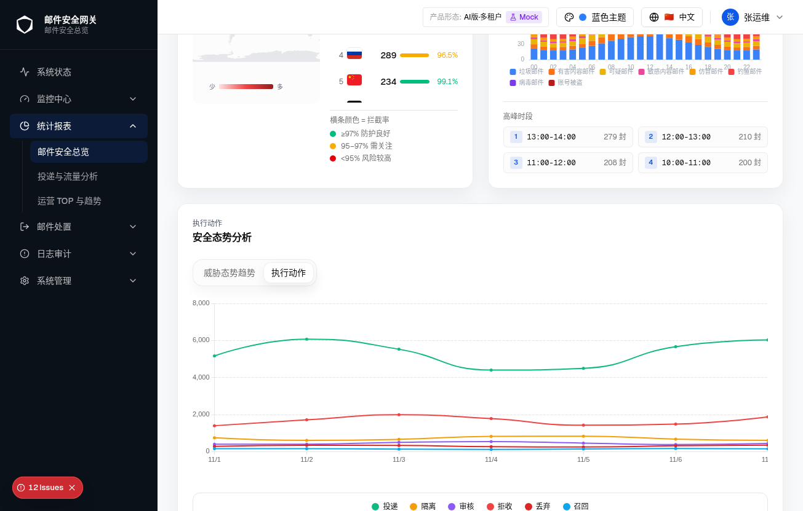
路由：
/zh/statistics/security-overview ·
主题：暗色 · 视口：1305×832 ·
形态：AI版·多租户 · 角色：平台管理员（Mock 演示数据）图表底部图例可见系列：递、隔离、审核、拒收、丢弃、召回，不含"灰名单"

六个系列完整展示；"灰名单"（
advanced_review）已从图例、折线数据系列和表格列中全部移除
1.3 逐元素说明
| 元素 | 变更前 | 变更后 | 源码路径 | 形态/角色差异 |
|---|---|---|---|---|
| 执行动作图表系列列表 | 投递、 |
投递、隔离、审核、拒收、丢弃、召回 | TrendChartCard.tsx — keys useMemo，过滤条件：advanced_review |
[Base] 所有形态/角色一致 |
| 图表底部图例按钮 | 含"灰名单"图例按钮（灰色圆点 + 文案） | 移除"灰名单"图例按钮 | TrendChartCard.tsx 第 221 行 keys.map 渲染 |
[Base] |
| 详情表格列（执行动作维度） | 含 advanced_review 列 |
移除 advanced_review 列 |
DetailTable.tsx — EXCLUDED_ACTION_KEYS 集合：['advanced_review', 'sideline', 'greylist', 'mark_deliver'] |
[Base] |
| 图例 i18n 标签 | emailDisposal.filters.actions.advanced_review = "灰名单" |
该 key 不再被引用（key 本身保留在 zh.json 中，未删除） | messages/zh.json 第 5691 行 |
[Base] |
变更 1 · 搜索模块执行动作筛选移除"灰名单"
1.1 方案概述
邮件处置中心搜索筛选区域的"执行动作"下拉 Select 原本包含"灰名单"（advanced_review）选项。
由于灰名单已从执行动作枚举中独立出来，搜索筛选的执行动作选项需要同步移除"灰名单"，使筛选口径与实际执行动作枚举保持一致。
src/types/email-disposal.ts 的 EXECUTION_ACTIONS 常量数组（单一事实来源，同时驱动搜索筛选 Select 和安全总览图表）——移除 'advanced_review' 一项。
1.2 截图式交互预览
触发路径：导航至 /zh/email-disposal/center → 页面加载完成 → 点击"执行动作"筛选下拉 → 展开选项列表
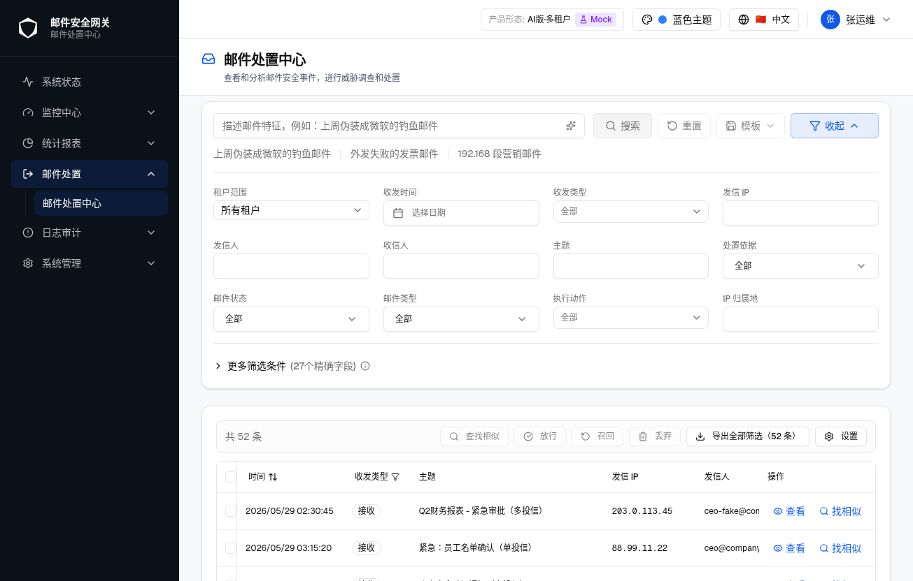
路由：
/zh/email-disposal/center ·
主题：暗色 · 视口：1305×832 ·
形态：AI版·多租户 · 角色：平台管理员（Mock 演示数据）执行动作筛选 Select 初始值为"全部"，下拉折叠态
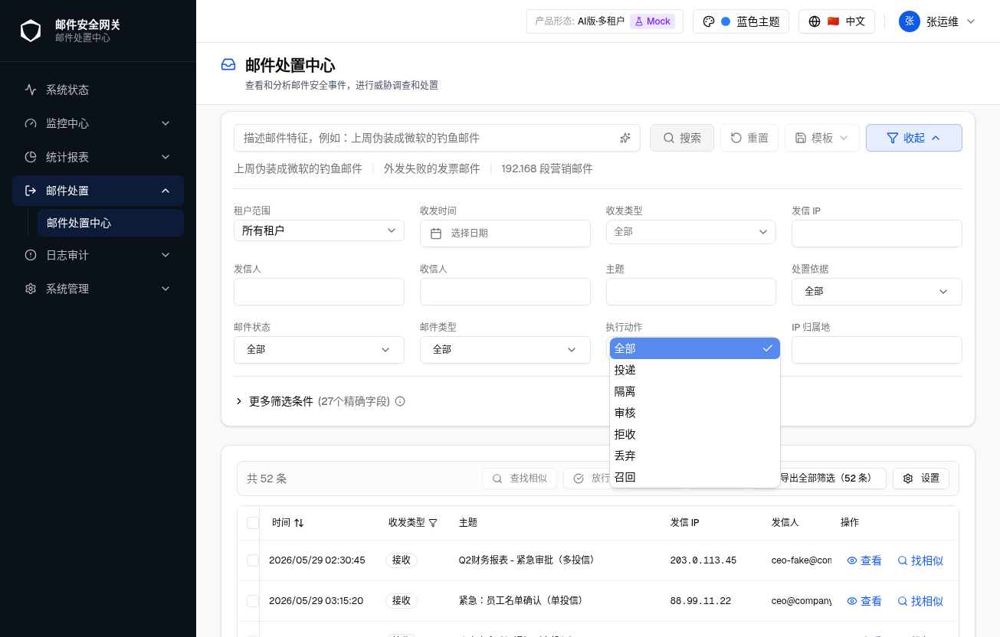
选项列表：全部、投递、隔离、审核、拒收、丢弃、召回，共 7 项（含"全部"）； "灰名单"已从选项中完全移除
1.3 逐元素说明
| 元素 | 变更前 | 变��后 | 源码路径 | 形态/角色差异 |
|---|---|---|---|---|
| 执行动作筛选 Select 选项列表 | 全部、投递、 |
全部、投递、隔离、审核、拒收、丢弃、召回（7 项） | src/types/email-disposal.ts — EXECUTION_ACTIONS 常量数组，移除 'advanced_review' |
[Base] 所有形态/角色一致 |
执行动作 i18n 标签 advanced_review |
emailDisposal.filters.actions.advanced_review = "灰名单"（可见） |
该 key 不再被 Select 选项引用（key 保留在 zh.json 中，未删除） | messages/zh.json 第 5691 行 |
[Base] |
变更 1 · 域名类型输入控件：下拉 Select 改为可自由输入 Combobox + 租户接收域名建议列表
1.1 方案概述
原实现（GT-12117）中，新建/编辑规则抽屉的"发信人"字段在类型为"组织域名"时，仅允许从当前租户的接收域名列表中下拉选择。 当租户无接收域名时，控件显示提示文案"该租户暂无接收域名"且无法输入，导致无法针对外部恶意发信域名（如 phishing-attack.com）创建黑名单规则。
本次变更将该控件从纯 Select 改为内联 DomainCombobox 组件：支持自由输入任意合法域名，同时在输入框 focus 时将租户接收域名作为快捷建议展示在浮层中，建议项随输入词实时过滤。
i18n key senderType_domain 从"组织域名"更名为"发信域名"（更准确表达语义），新增 domainSuggestions 用于建议浮层标签文案。
src/components/security/sender-filter/SenderFilterDrawer.tsx — 新增内联 DomainCombobox 子组件，替换 domain 分支下的 Select/空态提示；
messages/zh.json 和 messages/en.json 更新 senderType_domain、senderPlaceholder_domain，新增 domainSuggestions。
1.2 截图式交互预览
触发路径：安全策略 → 策略流水线 → 发信人黑白名单「配置」→ 「新建规则」→ 发信人类型下拉展开
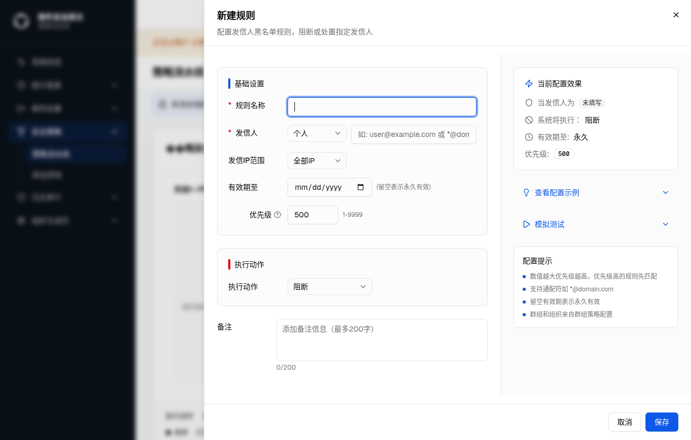
路由：
/zh/security/pipeline → 发信人黑白名单配置面板 ·
主题：暗色 · 视口：1253×832 ·
形态：AI版·多租户 · 角色：租户管理员（示例租户 A，Mock 演示数据）发信人类型默认为"个人"，右侧输入框为邮箱地址格式
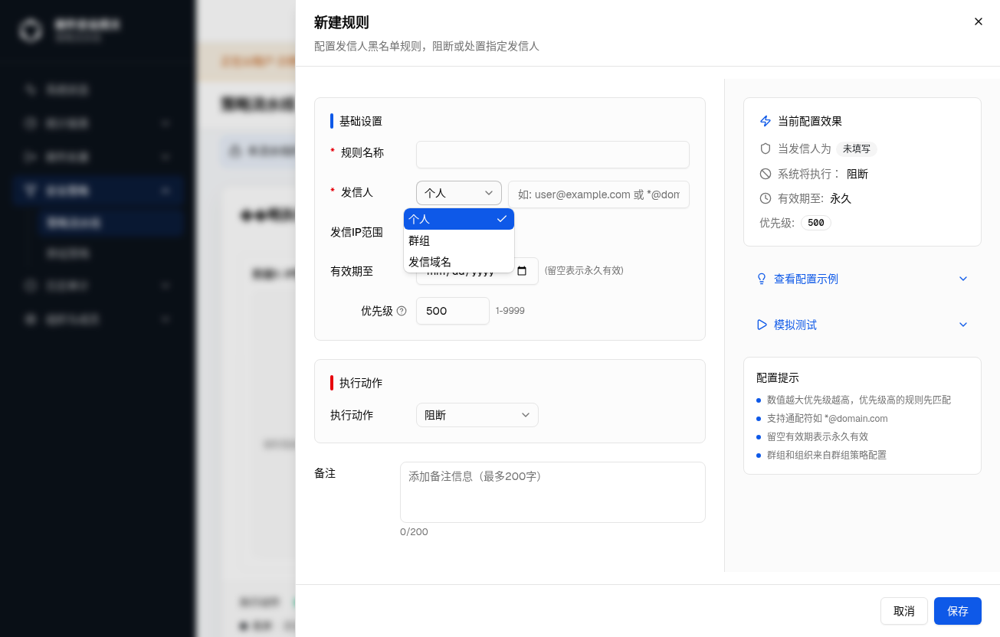
选项列表：个人 / 群组 / 发信域名（原"组织域名"，i18n key
senderType_domain 已更新为"发信域名"）
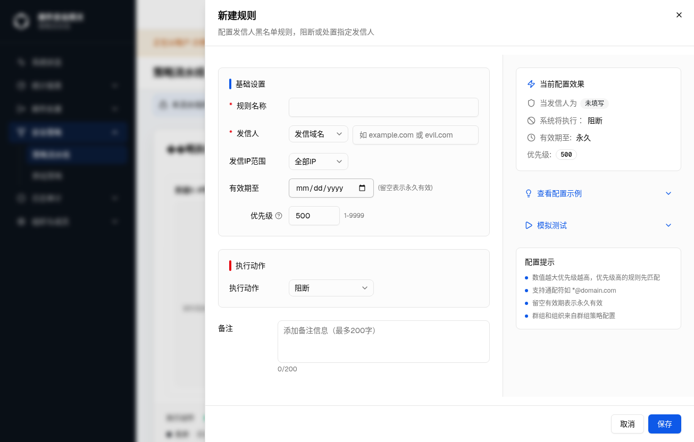
发信人类型切换为"发信域名"后，右侧控件从 Select 变为可自由输入的
Input；
placeholder 为"如 example.com 或 evil.com"（i18n key senderFilter.senderPlaceholder_domain）；
右侧"当前配置效果"显示"当发信人为 未填写"
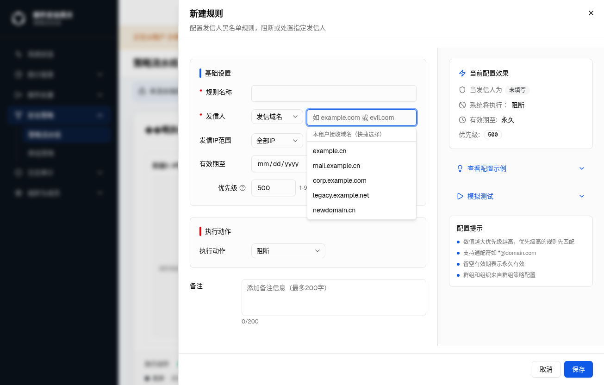
点击输入框后，在输入框正下方展开建议浮层；顶部分组标签"本租户接收域名（快捷选择）"（i18n key
senderFilter.domainSuggestions）；
列表展示租户 A 的 5 个接收域名：example.cn / mail.example.cn / corp.example.com / legacy.example.net / newdomain.cn；
建议随输入词实时过滤，点击建议项直接填充输入框并关闭浮层
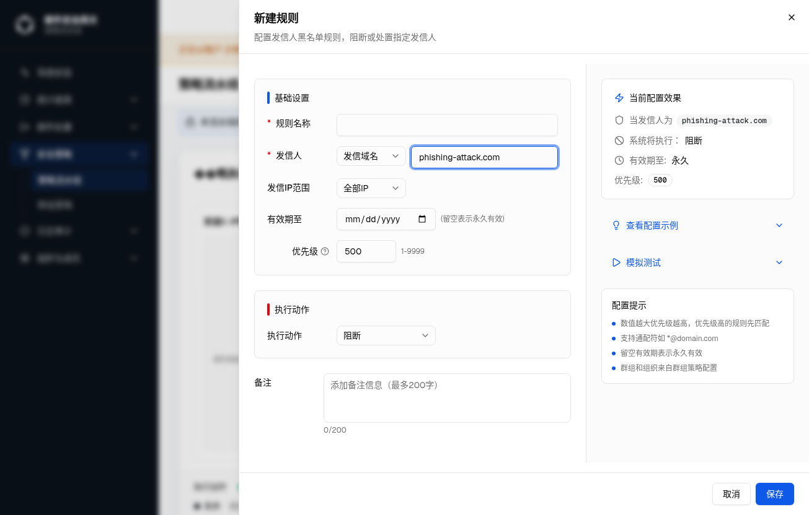
输入 phishing-attack.com（租户接收域名列表中不存在），无报错、无禁用； 右侧"当前配置效果"实时更新为"当发信人为 phishing-attack.com"，系统将执行阻断； Zod
domainRegex 校验仍有效，格式不合法时触发 field 级别错误
1.3 逐元素说明
| 元素 | 变更前 | 变更后 | 源码路径 / i18n key | 形态/角色差异 |
|---|---|---|---|---|
| 发信人类型选项 — 域名 | 文案："组织域名" | 文案："发信域名" | senderFilter.senderType_domain（zh: "发信域名" / en: "Sender Domain"） |
[Base] 所有形态/角色一致 |
| 发信人值输入控件（domain 分支） |
有接收域名时：Select 下拉，只能从租户接收域名中选择； 无接收域名时：显示提示文案"该租户暂无接收域名，请先在『接收域名』中配置"，无法输入 |
统一为自由输入 Input（DomainCombobox 组件），可填写任意合法域名；focus 时若租户有接收域名则展开建议浮层 |
SenderFilterDrawer.tsx — DomainCombobox 组件（新增内联子组件，替换 domain 分支下的 Select 和空态 div） |
[Base] |
| 域名输入框 placeholder | "请输入域名，如 example.com" | "如 example.com 或 evil.com" | senderFilter.senderPlaceholder_domain |
[Base] |
| 建议浮层分组标签 | 不存在 | "本租户接收域名（快捷选择）"；仅当 tenantDomains.length > 0 且 filtered.length > 0 时显示 |
senderFilter.domainSuggestions（新增 key） |
[Base] |
| 建议浮层列表项 | 不存在 | 租户接收域名列表，随输入词实时过滤（includes 不区分大小写）；点击 mousedown 事件填充并关闭浮层 |
DomainCombobox.filtered（useMemo，依赖 suggestions 和 inputValue） |
[Base] |
| 旧空态提示文案 | 无接收域名时显示："该租户暂无接收域名，请先在『接收域名』中配置" | 不再单独展示；已被 DomainCombobox 统一替代（租户有无接收域名均可自由输入） |
senderFilter.noTenantDomains（key 保留在 zh.json / en.json，未删除） |
[Base] |
| 域名格式校验 | 不适用（Select 选择，不需手输校验） | Zod domainRegex 校验（SenderFilterDrawer.tsx schema），格式不合法时触发 field 级别错误提示，onChange 触发 |
SenderFilterDrawer.tsx — senderValueSchema |
[Base] |
变更 1 · 总开关改为立即持久化：点击后直接生效，切换期间禁用，失败时回滚并 toast
1.1 方案概述
原实现中，附件安全检测抽屉顶部的"启用/禁用"开关点击后仅更新 draft 状态， 底部会出现"模块开关有未保存的更改"提示，用户必须额外点击"保存配置"才能真正持久化。 其他模块（发信行为管控、收信人检测等）的开关均在点击后立即调用 API 持久化， 两者交互语义不一致，存在用户误以为生效而实际未生效的安全风险。
本次变更在 AttachmentSecurityPage.tsx 中新增 handleToggleEnabled 异步函数：
点击开关时乐观更新 UI（立即翻转显示），同时调用 setSecurityModuleEnabled('attachment_security', next, apiRequest) 持久化；
成功后同步 baseline.enabled，使"保存配置"按钮对开关状态不再产生差异提交；
失败时回滚 draft.enabled 并弹出错误 toast（moduleT('saveFailed')）。
切换进行中 togglingEnabled=true，开关和"保存配置"按钮均禁用，防止重复操作。
src/components/security/AttachmentSecurityPage.tsx — 新增 handleToggleEnabled 函数和 togglingEnabled 状态，
PipelinePanelHeader onToggle 从 updateDraft('enabled', enabled) 改为 handleToggleEnabled；
save() 中移除 draft.enabled !== baseline.enabled 的冗余提交分支。
1.2 截图式交互预览
触发路径：安全策略 → 策略流水线 → 阶段3：内容层 → 附件安全检测「配置」→ 点击顶部启用/禁用开关
路由：
/zh/security/pipeline → 阶段3: 内容层 / 附件安全检测抽屉 ·
主题：暗色 · 视口：1253×832 ·
形态：AI版·多租户 · 角色：租户管理员（示例租户 A，Mock 演示数据）抽屉标题"阶段3: 内容层 / 附件安全检测"，右上角总开关蓝色（已启用）； 底部"保存配置"按钮为
disabled 状态（无未保存更改）
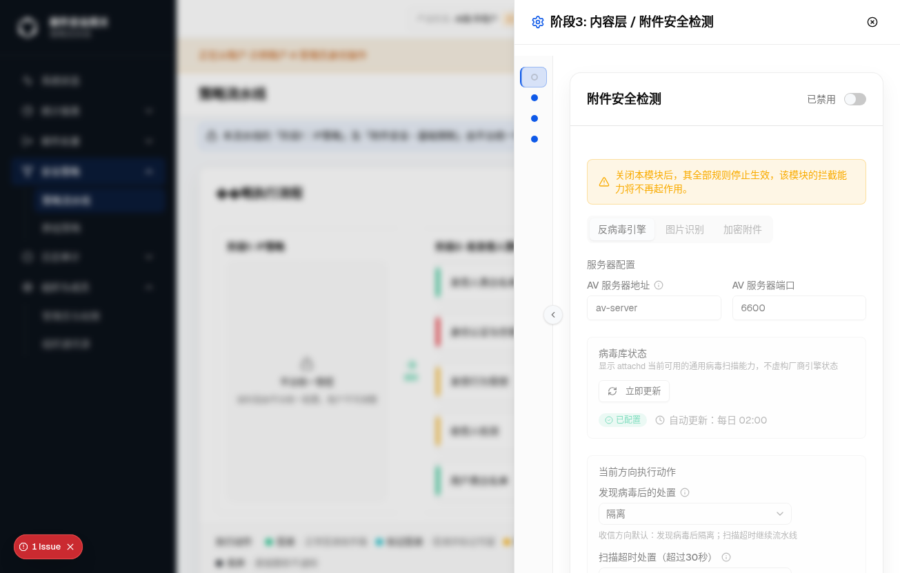
点击开关后 UI 立即切换为"已禁用"（灰色）； 面板显示警告横幅"关闭本模块后，其全部规则停止生效，该模块的拦截能力将不再起作用。"； 底部"保存配置"按钮仍为
disabled（API 已即时调用，baseline 已同步，无 draft 差异）；
无"模块开关有未保存的更改"提示（修复前的旧行为已消除）
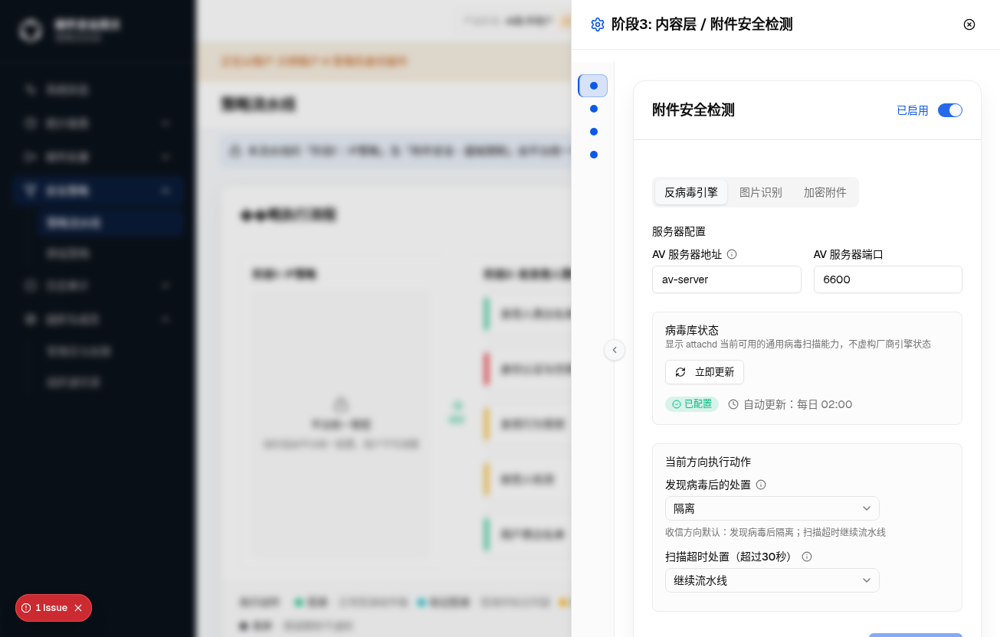
再次点击后 UI 立即恢复为"已启用"（蓝色），警告横幅消失； 底部"保存配置"按钮仍为
disabled；
连续切换两次后状态与初始值一致，无累积 draft，行为与 S-1 默认态完全相同
1.3 逐元素说明
| 元素 | 更前 | 变更后 | 源码路径 / 相关 key | 形态/角色差异 |
|---|---|---|---|---|
总开关（Switch / PipelinePanelHeader onToggle） |
点击后调用 updateDraft('enabled', enabled)，将状态写入 draft；底部��现"模块开关有未保存的更改"提示，需用户手动点击"保存配置"持久化 |
点击后调用 handleToggleEnabled(next)：乐观更新 UI，立即调用 setSecurityModuleEnabled('attachment_security', next, apiRequest) 持久化，成功后同步 baseline.enabled，底部无未保存提示 |
src/components/security/AttachmentSecurityPage.tsx — handleToggleEnabled 函数（新增） |
[Base] 所有形态/角色一致 |
| 总开关切换期间禁用 | 无禁用逻辑，可多次快速点击 | togglingEnabled=true 时开关 disabled，防止并发重复请求 |
AttachmentSecurityPage.tsx — togglingEnabled state（新增）；PipelinePanelHeader disabled prop 条件加入 || togglingEnabled |
[Base] |
| 切换失败回滚与 toast | 不适用（旧逻辑通过 save() 统一处理错误） |
API 调用失败时回滚 draft.enabled 为切换前值，弹出错误 toast（moduleT('saveFailed')） |
AttachmentSecurityPage.tsx — handleToggleEnabled catch 分支；i18n key module.saveFailed |
[Base] |
"保存配置"按钮 disabled 条件 |
开关切换后 draft 与 baseline 不同，按钮变为 enabled（可点击） | 开关切换后 baseline.enabled 立即同步，draft 与 baseline 始终一致，按钮保持 disabled（仅其他字段变更时才 enabled） |
AttachmentSecurityPage.tsx — save() 中已移除 draft.enabled !== baseline.enabled 的提交分支 |
[Base] |
| 底部"模块开关有未保存的更改"提示 | 每次点击开关后必然出现 | 不再出现（开关已立即持久化，不产生 draft 差异） | AttachmentSecurityPage.tsx — PipelinePanelFooter 的 dirty 判断中 enabled 差异已消除 |
[Base] |
变更 1 · 周内热力图修复：xAxis category 类型统一为零填充字符串，series data 同步，24 列完整渲染
1.1 方案概述
原实现中 TimeDistributionCard.tsx 的 ECharts 周内热力图 xAxis.data 传入数字数组
[0, 1, …, 23]，而 series data 中的 hour 值也是数字（cell.hour）。
ECharts category axis 内部将 data 项转为字符串 key 做映射，数字 0 转为 "0"，
但 heatmap series 传入的数字 0 在严格字符串比较下无法命中 category，
导致只有恰好与 day 索引（0~6）重合的前 7 个 hour 格子被正确渲染，其余 17 个小时列全部丢失。
修复方案：将 xAxis.data 改为零填充字符串数组 ['00','01',…,'23']；
series data 中的 hour 也统一用 String(cell.hour).padStart(2,'0') 转换，
确保两侧类型一致。同时 axisLabel.interval 改为 1（每格显示一个标签）、
inverse: false（周日在下）、图表高度在周内模式下扩展至 280px 以容纳 7 行。
tooltip formatter 更新为显示小时区间（如 12:00–13:00）。
src/components/statistics/security-overview/TimeDistributionCard.tsx —
weeklyOption 中 xAxis.data、series.data 的 hour 映射、
tooltip.formatter、yAxis.inverse、图表高度条件表达式。
1.2 截图式交互预览
触发路径：统计报表 → 邮件安全总览 → 攻击时段分布卡片右上角 → 点击「周内分布」
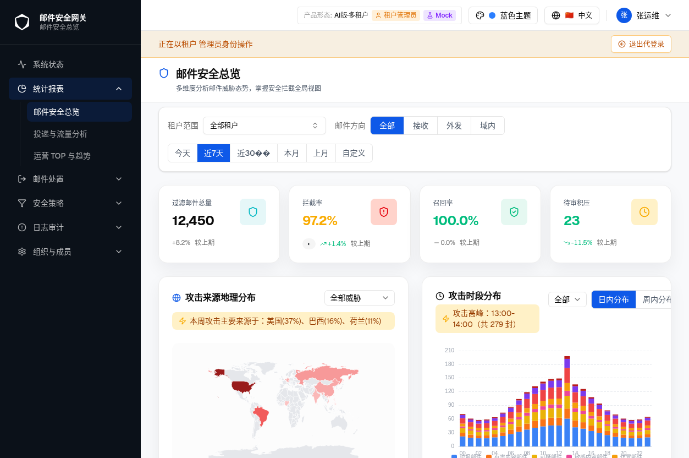
路由：
/zh/statistics/security-overview ·
主题：暗色 · 视口：1253×832 ·
形态：AI版·多租户 · 角色：租户管理员（Mock 演示数据）卡片右上角显示「日内分布」（选中，蓝色）和「周内分布」（未选中）两个切换按钮； 图表为 24 小时柱状图（堆叠），x 轴标签 00～22，峰值信息横幅显示 13:00–14:00 攻击高峰
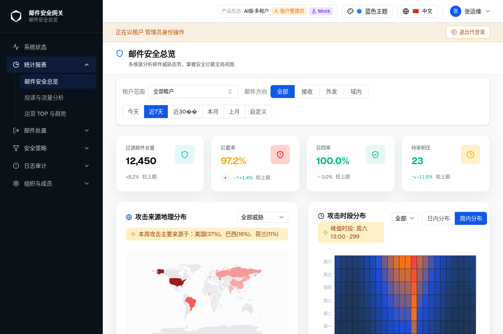
「周内分布」按钮切换为选中态（蓝色）；图表切换为热力图，纵轴 7 行（周六→周日）， 横轴标签从 00 延伸至 22 共 24 列全部可见； 峰值横幅更新为「峰值时段: 周六 13:00 · 299」； 修复前只显示 7 列（hour 0~6），修复后 24 列全部正确渲染
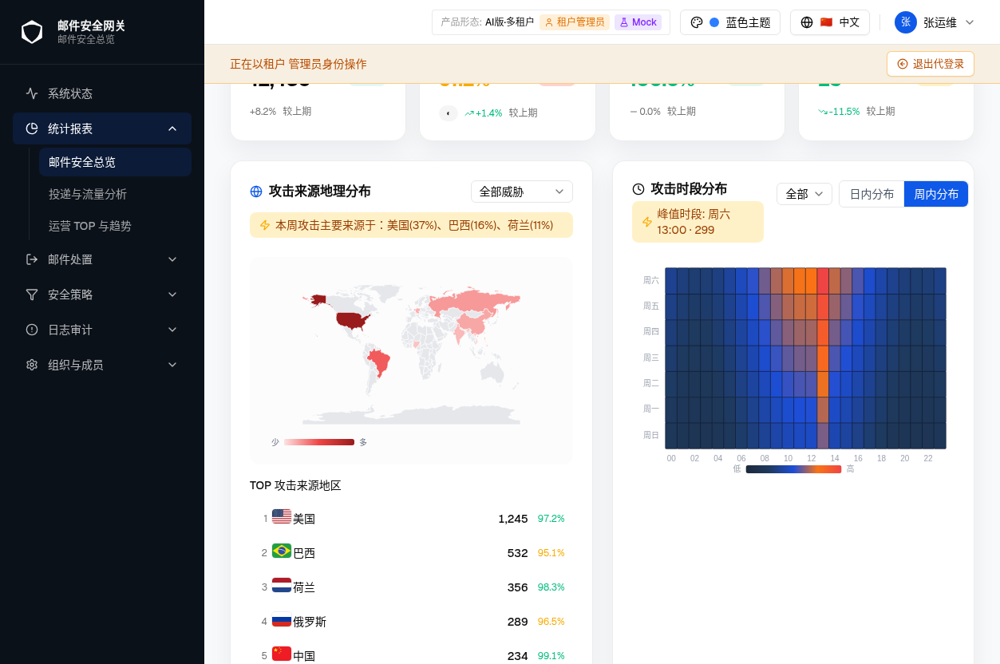
纵轴完整显示 7 天（周六、周五、周四、周三、周二、周一、周日）； 横轴完整显示 24 小时（00 02 04 06 08 10 12 14 16 18 20 22，每 2 小时一个刻度标签）； 底部 visualMap 图例显示低→高色阶（深蓝→蓝→橙→红）； 热力色块在 12:00–16:00 周四～周六区间呈橙红色，与日内分布峰值趋势一致
1.3 逐元素说明
| 元素 | 变更前 | 变更后 | 源码路径 / 相关 key | 形态/角色差异 |
|---|---|---|---|---|
ECharts xAxis.data（周内模式） |
数字数组 [0, 1, …, 23]；ECharts 内部转字符串时与 series data 的数字 hour 不一致，导致只有前 7 个 category 命中 |
零填充字符串数组 ['00','01',…,'23']；与 series data 类型完全一致，24 个 category 全部命中 |
TimeDistributionCard.tsx — weeklyOption xAxis.data |
[Base] 所有形态/角色一致 |
ECharts series data 中 hour 值（周内模式） |
cell.hour（数字） |
String(cell.hour).padStart(2,'0')（零填充字符串，与 xAxis.data 匹配） |
TimeDistributionCard.tsx — series[0].data map 函数 |
[Base] |
xAxis.axisLabel.interval |
2（每隔 2 个显示一个标签，以为 24 列展示） |
1（每 2 小时显示一个刻度标签，与当前 data 长度 24 匹配，避免标签重叠） |
TimeDistributionCard.tsx — xAxis.axisLabel.interval |
[Base] |
yAxis.inverse |
true（周一在上） |
false（周日在下，与自然星期阅读顺序一致） |
TimeDistributionCard.tsx — yAxis.inverse |
[Base] |
| 热力图图表高度 | 固定 230px（日内/周内共用） | 周内模式 280px，日内模式 230px（条件表达式 mode === 'weekly' ? 280 : 230） |
TimeDistributionCard.tsx — ReactECharts style.height |
[Base] |
tooltip formatter |
[value[1]] [value[0].padStart(2,'0')]:00（仅显示开始小时） |
[weekdays[value[1]]] HH:00–HH+1:00 / 数值加粗（显示完整时段区间） |
TimeDistributionCard.tsx — tooltip.formatter |
[Base] |
| visualMap 色阶 | ['#f3f4f6','#fef3c7','#fed7aa','#fdba74','#f87171']（浅灰→橙→红） |
['#1e293b','#1e3a5f','#1d4ed8','#f97316','#ef4444']（深蓝→蓝→橙→红，暗色背景下对比度更高） |
TimeDistributionCard.tsx — visualMap.inRange.color |
[Base] |
变更 1 · 移除"例外规则管理"横幅及其两个无效跳转按钮
1.1 方案概述
"认证仿冒检测配置"面板底部原存在一个"例外规则管理"横幅（ExceptionRulesEntry 组件），
内含"前往策略流水线"和"查看当前例外"两个按钮。该横幅在产品原型中无对应定义，两个按钮点击后无任何实际功能响应，
属于误植入的冗余 UI，对用户造成困惑。
本次变更从 AuthSpoofingPage.tsx 中移除 <ExceptionRulesEntry /> 的渲染调用及对应 import，
ExceptionRulesEntry 组件文件本身保留未删除。面板底部直接以"保存"按钮结束，布局更简洁。
src/components/security/AuthSpoofingPage.tsx — 移除第 226 行 <ExceptionRulesEntry /> 使用及第 19 行对应 import。
1.2 截图式交互预览
触发路径：安全策略 → 策略流水线 → 身份认证与仿冒检测「配置」→ 等待面板加载完成
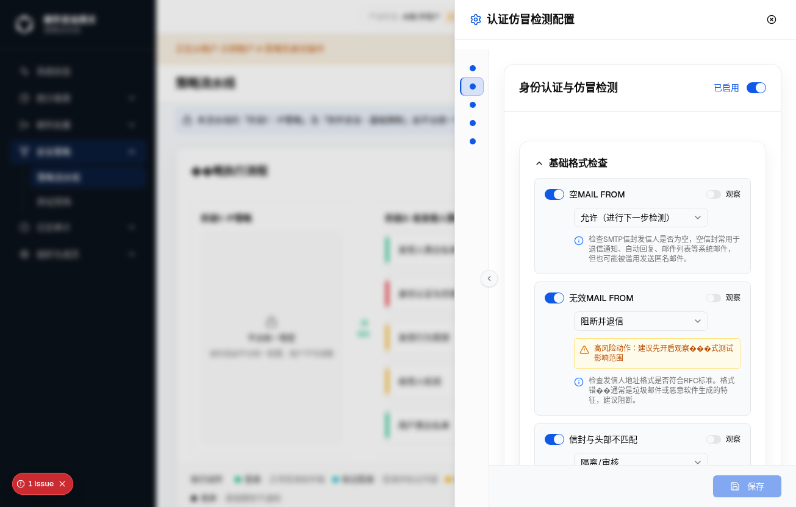
路由：
/zh/security/pipeline → 认证仿冒检测配置面板 ·
主题：暗色 · 视口：1253×832 ·
形态：AI版·多租户 · 角色：租户管理员（示例租户 A，Mock 演示数据）面板标题"认证仿冒检测配置"，左侧导航高亮"身份认证与仿冒检测"，顶部显示"基础格式检查"折叠区

原有"例外规则管理"横幅（含"前往策略流水线"/"查看当前例外"两按钮）已消失； 面板内容区域直接以配置项结束，"保存"按钮位于右下角；页面布局更简洁，无冗余跳转入口
1.3 逐元素说明
| 元素 | 变更前 | 变更后 | 源码路径 | 形态/角色差异 |
|---|---|---|---|---|
| "例外规则管理"横幅容器 | 面板底部渲染 ExceptionRulesEntry 组件，包含标题"例外规则管理"和描述文案"本模块不配置例外规则，请在策略流水线统一管理" |
完全移除，不再渲染 | src/components/security/AuthSpoofingPage.tsx 第 226 行（已移除） |
[Base] 所有形态/角色一致 |
| "前往策略流水线"按钮 | 横幅右侧按钮，点击无实际响应（原型未定义跳转行为） | 随横幅一并移除 | src/components/security/auth-spoofing/ExceptionRulesEntry.tsx（组件文件保留，渲染调用移除） |
[Base] |
| "查看当前例外"按钮 | 横幅右侧按钮，点击无实际响应（原型未定义跳转行为） | 随横幅一并移除 | src/components/security/auth-spoofing/ExceptionRulesEntry.tsx（组件文件保留，渲染调用移除） |
[Base] |
| 面板底部布局 | 底部：配置项 → 例外规则横幅 → 保存按钮 | 底部：配置项 → 保存按钮（布局更紧凑） | src/components/security/AuthSpoofingPage.tsx |
[Base] |
变更 1 · 搜索模板完整闭环：保存 / 重命名 / 删除 / 应用，模板菜单始终可访问
1.1 方案概述
在邮件处置中心搜索栏的「模板」下拉菜单中，完整实现了搜索模板的保存、重命名、删除和应用四条核心流程。
保存对象：quickFilter（基础筛选字段）+ advancedFilter（高级筛选 27 个精确字段）+ aiQuery（AI 自然语言主输入框原始文本）。分页、排序和表头筛选不保存。
保存交互：点击「保存当前条件」触发 SaveTemplateDialog（shadcn Dialog），自动填入「搜索模板 YYYY-MM-DD」格式默认名；字符上限 30；名称为空时「保存」禁用；与已有模板同名时出现 amber Warning「已存在同名模板，保存将覆盖原有条件」，按钮文字改为「覆盖保存」；达 20 条上限时出现 Info 提示；保存成功后 toast「已保存"<模板名>"」。支持 Enter 键提交，兼容 CJK IME（isComposing 判断）。
菜单入口：模板按钮始终可点击（templateMenuDisabled = false）。「保存当前条件」菜单项仍通过 disabled={!canSaveTemplate} 单独控制。
应用行为：无活跃条件时直接应用并自动搜索；有活跃条件时弹出 AlertDialog 确认「应用将替换当前所有搜索条件，是否继续？」，确认后全量替换并自动搜索，取消不做任何更改。AI 文本回填输入框但不自动解析。
重命名：点击铅笔图标触发同一 Dialog（mode="rename"），预填原名，确认后立即生效；与其他模板同名时 toast 报错并保持弹窗打开。
存储：localStorage key disposal-search-templates，上限 20 条，此期无后端 API，跨设备不同步（见 D-010）。
use-search-templates.ts（扩展类型、同名覆盖、新增 renameTemplate / hasTemplateName）；新建 save-template-dialog.tsx；search-bar.tsx（铅笔按钮、templateMenuDisabled=false）；email-disposal-center-page.tsx（保存改为弹窗、有条件确认、传 aiQuery）；messages/zh.json / messages/en.json（补充 19 个新 key）。
1.2 截图式交互预览
触发路径：邮件处置中心（/zh/email-disposal/center）→ 搜索栏右侧「模板」按钮 → 各下级交互
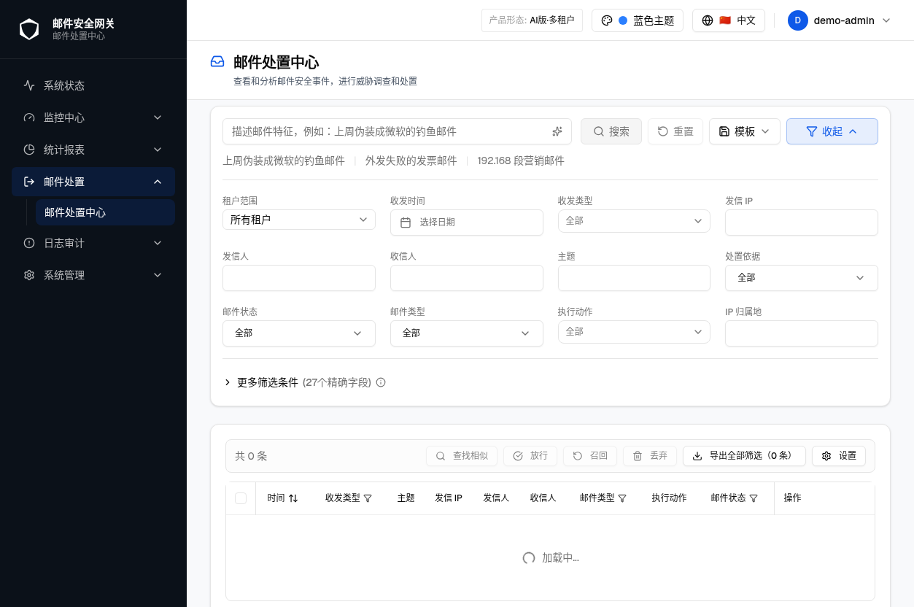
路由：
/zh/email-disposal/center · 暗色 · 1253×832 · AI版·多租户 · 租户管理员「模板」按钮（含收起图标）始终可点击（
disabled=false）；无筛选条件，无数字徽标；示例提示词三条可见。
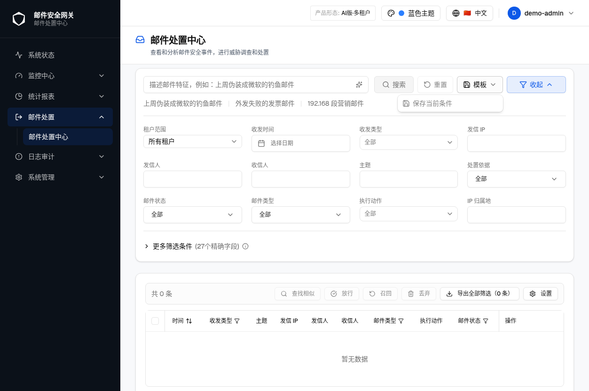
仅显示「保存当前条件」一项（当前无可保存条件，该项视觉禁用）；「已保存模板」分组不渲染。
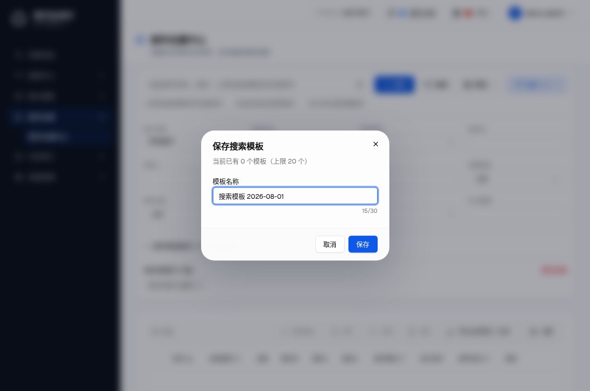
触发：执行动作选为「投递」后，点击「模板 → 保存当前条件」
标题「保存搜索模板」；描述「当前已有 0 个模板（上限 20 个）」； 输入框预填「搜索模板 2026-08-01」，字符计数 15/30；「取消 / 保存」按钮；支持 Enter 键提交。
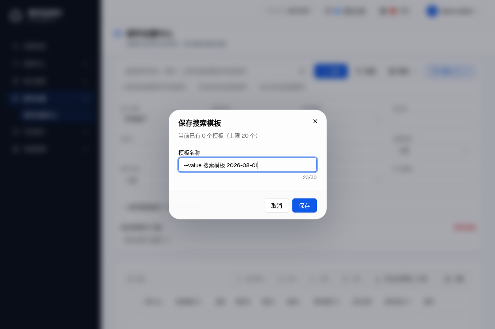
当输入名称与已有模板匹配时，输入框下方出现 amber Warning「已存在同名模板，保存将覆盖原有条件」； 按钮文字改为「覆盖保存」；确认后原地替换该模板条件，保留原 id 和 createdAt。
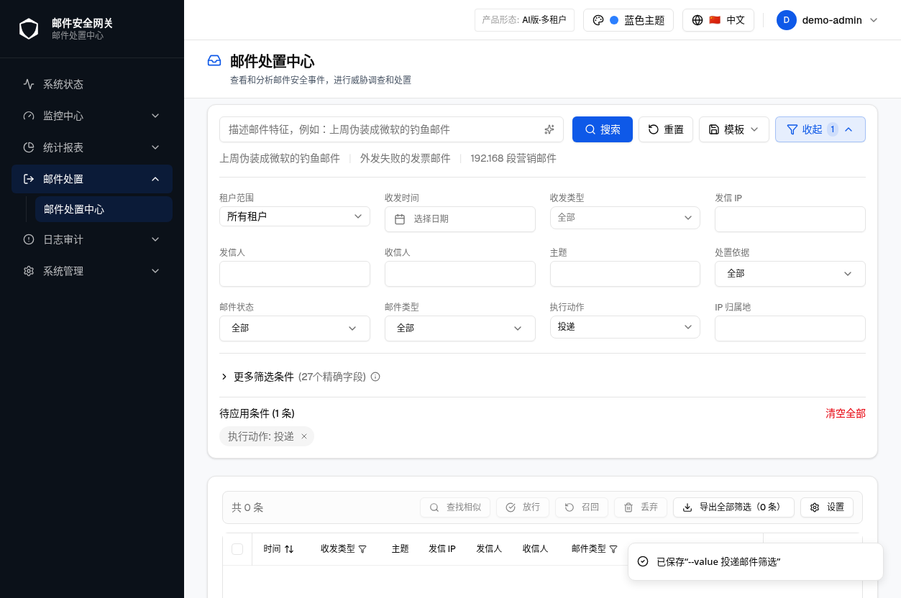
弹窗关闭，右下角 toast「已保存"<模板名>"」； 「模板」按钮右侧显示数字徽标 1；搜索栏底部「待应用条件（1 条）」提示条件仍待搜索。
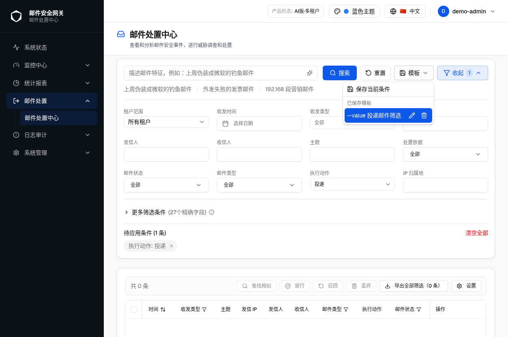
下拉菜单分两个 section：「保存当前条件」（顶部）、「已保存模板」（下方）； 模板条目右侧有铅笔（重命名）和垃圾桶（删除）两个图标按钮； 点击条目主体区域触发应用流程；点击图标按钮通过
stopPropagation 阻止触发应用。
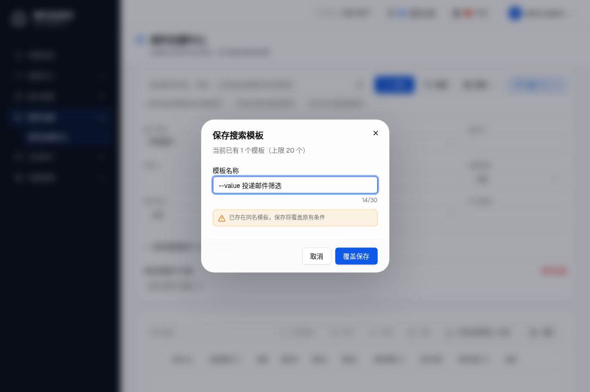
描述更新为「当前已有 1 个模板（上限 20 个）」； 输入与已有模板同名的字符串时 amber Warning 显示，按钮改为「覆盖保存」。
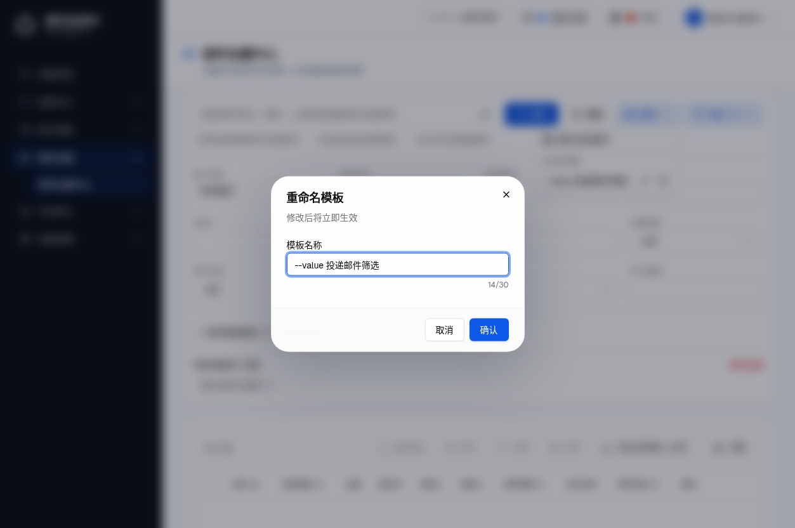
触发：点击模板列表条目右侧铅笔图标按钮
标题「重命名模板」；描述「修改后将立即生效」；输入框预填原模板名称，计数 14/30； 「取消 / 确认」按钮；名称为空时「确认」禁用；与其他模板同名时 toast 报错并保持弹窗打开。
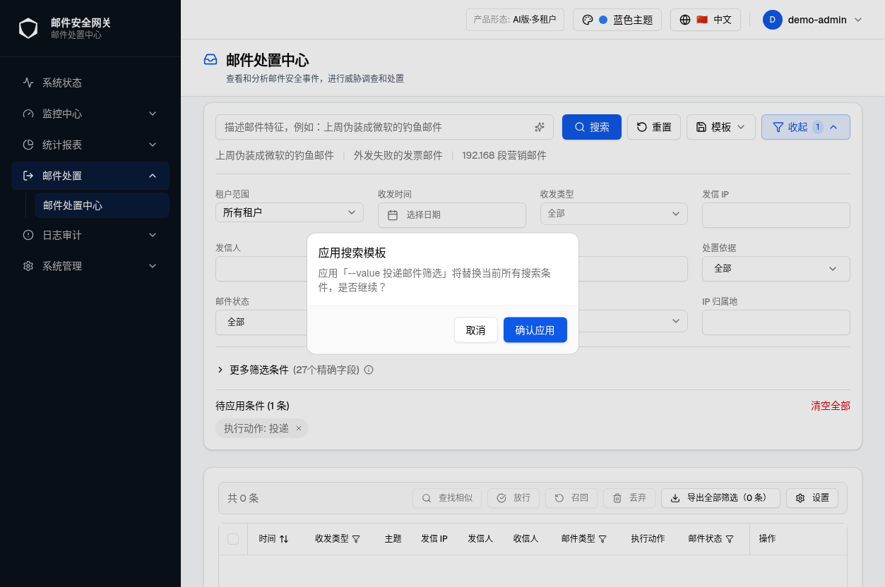
触发：当前搜索栏有活跃筛选条件时，点击模板列表条目
标题「应用搜索模板」；描述「应用"<模板名>"将替换当前所有搜索条件，是否继续？」； 「取消 / 确认应用」按钮；确认后全量替换并自动搜索；无活跃条件时跳过此 Dialog 直接应用。
1.3 逐元素说明
| 元素 | 变更前 | 变更后 | 源码路径 / 相关 key | 形态/角色差异 |
|---|---|---|---|---|
| 「模板」按钮 disabled 逻辑 | !canSaveTemplate && templates.length === 0（初始状态禁用，无法点击） |
始终 false；「保存当前条件」菜单项自身保持 disabled={!canSaveTemplate} |
search-bar.tsx — templateMenuDisabled |
[Base] |
| 「保存当前条件」onClick | 内联直接 saveTemplate()，无命名弹窗 |
调用 setSaveTemplateOpen(true)，打开 SaveTemplateDialog |
email-disposal-center-page.tsx — onSaveTemplate |
[Base] |
| 模板条目操作按钮 | 只有垃圾桶（删除） | 新增铅笔按钮（重命名，aria-label="重命名: <name>"）；两者均 stopPropagation |
search-bar.tsx — 模板 DropdownMenuItem 内 Pencil 图标按钮 |
[Base] |
| SaveTemplateDialog（新建组件） | 不存在 | 复用于保存（mode="save"）和重命名（mode="rename"）；字符上限 30；空名禁用；同名 amber Warning + 按钮变「覆盖保存」；上限 Info；Enter 提交兼容 CJK IME | save-template-dialog.tsx |
[Base] |
| SearchTemplate 类型 | { id, name, quickFilter, advancedFilter, createdAt } |
新增 aiQuery?: string、updatedAt?: string |
use-search-templates.ts — SearchTemplate interface |
[Base] |
| saveTemplate 同名覆盖 | 始终创建新条目 | 同名时原地替换（保留 id 和 createdAt，更新 updatedAt）；上限时丢弃最旧一条 | use-search-templates.ts — saveTemplate |
[Base] |
| renameTemplate（新增） | 不存在 | 根据 id 原地更新 name 和 updatedAt；同名冲突返回 false，由 page 层 toast 报错 | use-search-templates.ts — renameTemplate |
[Base] |
| 应用模板行为 | 直接设置 filter state，不自动搜索，AI 条件清空 | 有活跃条件时先弹 AlertDialog 确认；确认后全量替换并自动搜索；AI 原始文本回填输入框不自动解析 | email-disposal-center-page.tsx — applyTemplate / pendingTemplateId |
[Base] |
| 新增 i18n key | 缺少约 19 个 key | renameTemplate、saveTemplateTitle、saveTemplateDesc、renameTemplateTitle、renameTemplateDesc、templateNameLabel、templateNamePlaceholder、templateNameRequired、templateOverwriteWarning、templateOverwriteConfirm、templateLimitWarning、templateApplyConfirmTitle、templateApplyConfirmDesc、templateApplyConfirm、cancel、save、confirm 等 |
messages/zh.json / messages/en.json — emailDisposal.search.* |
[Base] |
C. 差异标注
D-001 · 旧数据兼容映射行为未在浏览器中验证
| 状态 | 无法验证 |
| 描述 | 后端存储了旧 product_action='block' 或 'mark' 的规则时，parseRblConfig 中的 legacyMap 会将其映射到 'reject'。该分支在演示环境下无法构造旧数据触发，未通过浏览器实际验证。 |
| 验证依据 | 源码 rbl-config-serde.ts 第 115-120 行 |
| 处理说明 | 列入 Q-002 待确认；需在测试环境写入旧格式数据后验证映射行为 |
D-002 · 灰名单配置 Dialog 在变更后未重新截图
| 状态 | 未覆盖 |
| 描述 | 灰名单策略卡片选中后点击"点击配置"可打开灰名单配置 Dialog（greylistDialogOpen）。该 Dialog 的内部结构、字段、交互行为在本次增量中未重新截图记录，因为 Dialog 内容未发生变更。 |
| 验证依据 | 本次变更不涉及 Dialog 内部逻辑，仅触发入口从"action=greylist"变为"greylistEnabled=true" |
| 处理说明 | 已有规格（如有）保持有效；如需补充 Dialog 规格可在后续增量中追加 |
D-003 · 用户描述"阻断"改为"拒收"
| 状态 | 已解决 |
| 描述 | 用户明确要求将"阻断"（block）改名为"拒收"（reject），同时 API value 从 block 改为 reject。 |
| 解决版本 | GT-12682 · 2026-07-31 |
| 验证依据 | 图 S-4 截图中下拉第一项文案为"拒收"；源码 rbl-filter.ts 类型定义已更新 |
D-004 · 安全总览图表"灰名单"系列的后端 key 经多轮排查才确认为 advanced_review
| 状态 | 已解决 |
| 描述 | 最初过滤尝试了 greylist 和 sideline，均未命中。通过 console.log 确认数据 key 后，发实际是 advanced_review（在 emailDisposal.filters.actions.advanced_review 中翻译为"灰名单"）。 |
| 解决版本 | GT-12660 · 2026-07-31 |
| 验证依据 | 图 S-1/S-2 截图图例不含"灰名单"；messages/zh.json 第 5691 确认 key 映射 |
D-005 · EXECUTION_ACTIONS 是安全总览与邮件处置中心的共享事实源，移除 advanced_review 对两处同时生效
| 状态 | 已解决 |
| 描述 | EXECUTION_ACTIONS（src/types/email-disposal.ts）作为单一来源同时驱动邮件处置中心搜索筛选 Select 和安全总览图表过滤。GT-12659 从该数组移除 'advanced_review'，GT-12660 在图表渲染层独立过滤（TrendChartCard 和 DetailTable）。两处修改均已验证截图。 |
| 解决版本 | GT-12659 · 2026-07-31 |
| 验证依据 | GT-12659 S-2 截图下拉无"灰名单"；GT-12660 S-1/S-2 截图图例无"灰名单" |
D-006 · GT-12665 域名 Combobox 旧空态提示 key noTenantDomains 保留但界面不再渲染
| 状态 | 已确认·不删除 |
| 描述 | 旧实现在租户无接收域名时展示提示文案（i18n key senderFilter.noTenantDomains）；新 DomainCombobox 不再渲染该逻辑。key 仍保留在 messages/zh.json 和 messages/en.json 中（未删除），属于死字符串。不影响运行时，可在下一次国际化清理中移除。 |
| 解决版本 | GT-12665 · 2026-07-31 |
| 验证依据 | S-3/S-4/S-5 截图均为自由输入模式，浏览器快照无 noTenantDomains 提示；SenderFilterDrawer.tsx 源码 domain 分支已替换为 DomainCombobox |
D-009 · GT-12587 周内热力图 yAxis weekdays 数组顺序与 mock 数据 day 索引的对应关系需确认
| 状态 | 待确认·低优先级 |
| 描述 |
修复后 yAxis.data 为 weekdays 数组（来自 i18n，顺序为周日→周六），
series data 中 cell.day 的取值范围为 0~6（mock 生成逻辑 day = Math.floor(index / 24)）。
ECharts category y 轴按数组索引映射：day=0 → weekdays[0]。
需确认后端真实接口中 day 字段是否也以 0=周日 或 0=周一 的方式定义，
以保证标签与实际时段对应。
|
| 解决版本 | 待后端接口联调时确认 |
| 验证依据 | Mock 演示数据截图（S-2/S-3）中热力色块分布符合预期，但 day 索引语义依赖后端约定 |
D-008 · GT-12657 附件安全检测总开关切换失败的 toast 依赖 moduleT('saveFailed') key，需确认多语言覆盖
| 状态 | 已确认·复用已有 key |
| 描述 | handleToggleEnabled 的 catch 分支调用 toast.error(moduleT('saveFailed'))，复用了 ModuleMasterSwitch 原有 i18n key module.saveFailed，zh/en 均已有翻译。无需新增 key，但需确认其他 locale（如 ja、ko）的翻译是否已覆盖。 |
| 解决版本 | GT-12657 · 2026-07-31（i18n key 复用确认） |
| 验证依据 | S-2/S-3 截图无错误 toast（正常操作路径），错误态无法在 Mock 环境安全触发，记录为"无法验证错误 toast 显示效果" |
D-007 · ExceptionRulesEntry 组件文件保留但渲染调用已移除，可在后续清理中删除
| 状态 | 已确认·暂保留 |
| 描述 | src/components/security/auth-spoofing/ExceptionRulesEntry.tsx 组件文件本身未被删除，但 AuthSpoofingPage.tsx 已移除其渲染调用和 import，属于死代码。不影响运行时，可在后续组件清理时一并删除。 |
| 解决版本 | GT-12661 · 2026-07-31 |
| 验证依据 | S-2 截图底部无"例外规则管理"横幅；AuthSpoofingPage.tsx 源码确认无 ExceptionRulesEntry import 和渲染 |
D-010 · GT-12563 搜索模板存储仅限 localStorage，多设备无法同步
| 状态 | 待确认·低优先级 |
| 描述 |
当前模板数据存储在 localStorage（key: disposal-search-templates），
跨设备或跨浏览器无法同步。若产品需要「租户共享模板」或「跨设备同步」，
需要新增后端 CRUD 接口。此期实现范围为前端本地存储，共享范围为「个人/当前浏览器」。
|
| 解决版本 | 待产品确认共享范围需求后决定 |
| 验证依据 | use-search-templates.ts 中 localStorage 持久化实现，无 API 调用 |
D. 待确认事项
Q-001 · 租户管理员角色下 RBL 过滤配置页可见性
| 状态 | 待确认 |
| 问题 | 多租户形态下，租户管理员是否有权限访问 /zh/rules/rbl 配置页？矩阵中相关单元格标记为 ?。 |
| 影响 | 产品形态 × 角色矩阵中"云-多租户管理员"、"AI-多租户管理员"、"传统-多租户管理员"列的所有行 |
| 建议 | 在测试环境切换为租户管理员账号，访问该路由，确认可见/只读/隐藏状态后补充矩阵 |
Q-002 · 旧数据兼容映射需测试环境验证
| 状态 | 待确认 |
| 问题 | 数据库中存有 product_action='block' 或 'mark' 的旧规则时，前端 legacyMap 是否正确映射并正确回显为"拒收"？保存后是否正确写入 reject？ |
| 影响 | 升级前已配置了阻断/标记的租户，其规则在升级后的前端展示是否符合预期 |
| 建议 | 测试环境构造旧格式数据，验证读取映射和保存回写两个方向的行为 |
E. 版本历史
| 版本 | 日期 | commit | 摘要 |
|---|---|---|---|
| v1 | 2026-07-31 | ebec245 |
初始创建 GT-126811.html，记录三个变更点目录结构（无真实截图，使用文字描述占位） |
| v2 | 2026-07-31 | ebec245 |
按 html-spec-PM-version 技能规范完整重写：新增三张真实浏览器截图（S-1 默认态 / S-2 执行动作选中 / S-3 灰名单选中 / S-4 下拉展开）；仅记录最终实现方案；完善 interaction-preview、逐元素表、i18n key 变更表、差异 D-001~D-003、待确认 Q-001~Q-002；乱码自检 CLEAN。 |
| v3 | 2026-07-31 | 6f7749d |
增量追加 GT-12660 需求：邮件安全总览执行动作图表移除"灰名单"系列（后端 key advanced_review）；新增一级目录条目 GT-12660、变更 1 区块、截图式交互预览 S-1/S-2（暗色 1305×832）、逐元素变更表；追加差异 D-004（key 排查过程记录）；目录 C 项编号更新为 D-001~D-004。 |
| v4 | 2026-07-31 | 640e96f |
增量追加 GT-12659 需求：邮件处置中心搜索模块执行动作筛选移除"灰名单"（从 EXECUTION_ACTIONS 移除 'advanced_review'）；新增一级目录条目 GT-12659、变更 1 区块、截图式交互预览 S-1（默认态）/ S-2（下拉展开，7 项无灰名单）、逐元素变更表；追加差异 D-005（共享事实源说明）；目录 C 项编号更新为 D-001~D-005。 |
| v5 | 2026-07-31 | bbe5bee |
增量追加 GT-12665 需求：发信人黑白名单域名类型输入控件由 Select（仅限租户接收域名）改为 DomainCombobox（可自由输入任意域名，focus 时展示租户接收域名建议列表）；新增一级目录条目 GT-12665、变更 1 区块（1.1 方案概述 / 1.2 截图式交互预览 S-1~S-5 暗色 1253×832 / 1.3 逐元素变更表）；追加差异 D-006（noTenantDomains key 保留但不再渲染）；目录 C 项编号更新为 D-001~D-006；version.json current_version 8→9。 |
| v10 | 2026-07-31 | 54cb647 |
增量追加 GT-12661 需求：从认证仿冒检测配置面板移除底部"例外规则管理"横幅（含"前往策略流水线"和"查看当前例外"两个���效按钮）；新增一级目录条目 GT-12661、变更 1 区块（1.1 方案概述 / 1.2 截图式交互预览 S-1 默认态 + S-2 底部无横幅，暗色 1253×832 / 1.3 逐元素变更表）；追加差异 D-007（ExceptionRulesEntry 组件文件保留为死代码）；目录 C 项编号更新为 D-001~D-007；version.json current_version 9→10。 |
| v11 | 2026-07-31 | ede9867 |
增量追加 GT-12657 需求：附件安全检测总开关从 draft 模式改为立即持久化（新增 handleToggleEnabled，调用 setSecurityModuleEnabled，失败回滚 + toast，切换期间禁用）；新增一级目录条目 GT-12657、变更 1 区块（1.1 方案概述 / 1.2 截图式交互预览 S-1 默认态 + S-2 切换禁用即时生效 + S-3 切换启用即时生效，暗色 1253×832 / 1.3 逐元素变更表 5 项）；追加差异 D-008（moduleT('saveFailed') i18n key 复用确认）；目录 C 项编号更新为 D-001~D-008；version.json current_version 10→11。 |
| v12 | 2026-07-31 | d706c3d |
增量追加 GT-12587 需求：邮件安全总览攻击时段分布周内热力图修复（xAxis.data 由数字数组改为零填充字符串 ['00'~'23']，series data hour 同步转换，消除 ECharts category 类型不匹配导致的 24 列只渲染 7 列问题）；同步更新 yAxis.inverse、axisLabel.interval、图表高度（周内 280px）、tooltip formatter（显示小时区间）、visualMap 色阶（暗色对比度优化）；新增一级目录条目 GT-12587、变更 1 区块（1.1 方案概述 / 1.2 截图式交互预览 S-1 日内分布默认态 + S-2 周内切换后 7×24 矩阵完整渲染 + S-3 完整视图，暗色 1253×832 / 1.3 逐元素变更表 7 项）；追加差异 D-009（weekdays 数组与后端 day 索引对应关系待确认）；目录 C 项编号更新为 D-001~D-009；version.json current_version 11→12。 |
| v13 | 2026-08-01 | 99410b4 |
增量追加 GT-12563 搜索模板实现：追加一级目录条目「GT-12563 搜索模板实现」及变更 1 区块（1.1 方案概述 / 1.2 截图式交互预览 S-1~S-9 暗色 1253×832 / 1.3 逐元素变更表 9 项）；涵盖模板按钮 disabled 修复（始终 false）、新建 SaveTemplateDialog 组件（保存/重命名复用）、同名覆盖 amber Warning + 按钮文字变「覆盖保存」、铅笔重命名按钮、应用确认 AlertDialog（有活跃条件时弹出）、SearchTemplate 类型扩展（aiQuery/updatedAt）、19 个新增 i18n key；追加差异 D-010（localStorage 跨设备不同步）；目录 C 项编号更新为 D-001~D-010；version.json current_version 12→13。 |